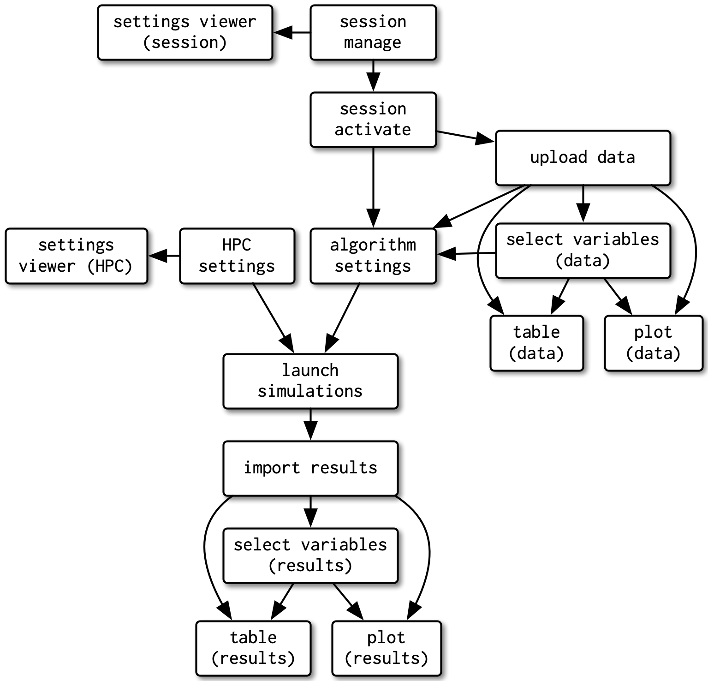
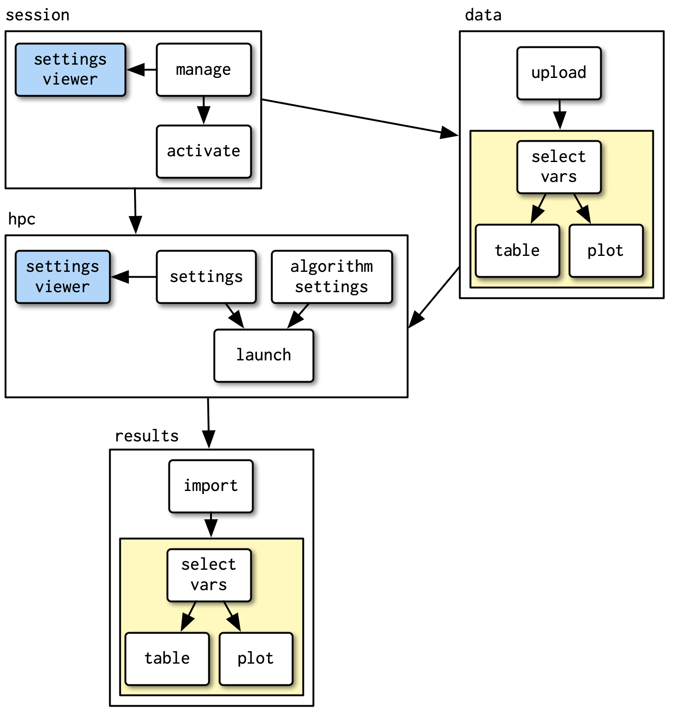

Shiny Modules
Not to be confused with a Python Module
Shiny modules
Share a few tips, tricks, and “code smells” for using Shiny modules
Shiny modules:
- Namespaceing (isolation)
- Reuse code (just like a normal function)
- Do not need to worry about duplicate IDs as you reuse modules
Similar to a normal function
- Inputs and outputs (not to be confused with Shiny inputs and outputs)
Motivation


Code smell - Repeated elements
#| '!! shinylive warning !!': |
#| shinylive does not work in self-contained HTML documents.
#| Please set `embed-resources: false` in your metadata.
# | standalone: true
# | #| components: [editor, viewer]
# | layout: horizontal
# | viewerHeight: 500
from shiny import App, ui
app_ui = ui.page_fluid(
ui.input_slider("n1", "N", 0, 100, 20),
ui.input_slider("n2", "N", 0, 100, 20),
ui.input_slider("n3", "N", 0, 100, 20),
ui.input_slider("n4", "N", 0, 100, 20),
ui.input_slider("n5", "N", 0, 100, 20),
ui.input_slider("n6", "N", 0, 100, 20),
)
app = App(app_ui, None)Code smell - multiple function calls
#| '!! shinylive warning !!': |
#| shinylive does not work in self-contained HTML documents.
#| Please set `embed-resources: false` in your metadata.
# | standalone: true
# | #| components: [editor, viewer]
# | layout: horizontal
# | viewerHeight: 500
from shiny import App, ui
def my_slider(id):
return ui.input_slider(id, "N", 0, 100, 20)
app_ui = ui.page_fluid(
my_slider("n1"),
my_slider("n2"),
my_slider("n3"),
my_slider("n4"),
my_slider("n5"),
)
app = App(app_ui, None)Code smell - UI via list iteration
#| '!! shinylive warning !!': |
#| shinylive does not work in self-contained HTML documents.
#| Please set `embed-resources: false` in your metadata.
# | standalone: true
# | #| components: [editor, viewer]
# | layout: horizontal
# | viewerHeight: 500
from shiny import App, ui
def my_slider(id):
return ui.input_slider(id, "N", 0, 100, 20)
ids = ["n1", "n2", "n3", "n4", "n5"]
app_ui = ui.page_fluid([my_slider(x) for x in ids])
app = App(app_ui, None)Code smell - iterating over multiple lists
#| '!! shinylive warning !!': |
#| shinylive does not work in self-contained HTML documents.
#| Please set `embed-resources: false` in your metadata.
# | standalone: true
# | #| components: [editor, viewer]
# | layout: horizontal
# | viewerHeight: 500
from shiny import App, ui
def my_slider(id, label):
return ui.input_slider(id, label + " Number", 0, 100, 20)
numbers = ["n1", "n2", "n3", "n4", "n5"]
labels = ["First", "Second", "Third", "Fourth", "Fifth"]
app_ui = ui.page_fluid(
[my_slider(x, y) for x, y in zip(numbers, labels)]
)
app = App(app_ui, None)IDs need to be unique
This will work once, not more.
#| '!! shinylive warning !!': |
#| shinylive does not work in self-contained HTML documents.
#| Please set `embed-resources: false` in your metadata.
# | standalone: true
# | #| components: [editor, viewer]
# | layout: horizontal
# | viewerHeight: 500
from shiny import App, ui
from shiny import App, render, ui
def io_row():
return ui.layout_columns(
ui.card(ui.input_text("text_input", "Enter text")),
ui.card(ui.output_text("text_output")),
)
app_ui = ui.page_fluid(
io_row(),
)
def server(input, output, session):
@render.text
def text_output():
return f'You entered "{input.text_input()}"'
app = App(app_ui, server)Modules are functions
- Functions that reads reactive input
- Not to be confused with passing a reactive value into a function
Shiny module
#| '!! shinylive warning !!': |
#| shinylive does not work in self-contained HTML documents.
#| Please set `embed-resources: false` in your metadata.
# | standalone: true
# | #| components: [editor, viewer]
# | layout: horizontal
# | viewerHeight: 500
from shiny import App, module, render, ui
@module.ui
def row_ui():
return ui.layout_columns(
ui.card(ui.input_text("text_in", "Enter text")),
ui.card(ui.output_text("text_out")),
)
@module.server
def row_server(input, output, session):
@output
@render.text
def text_out():
return f'You entered "{input.text_in()}"'
extra_ids = ["row_3", "row_4", "row_5"]
app_ui = ui.page_fluid(row_ui("row_1"), row_ui("row_2"), [row_ui(x) for x in extra_ids])
def server(input, output, session):
row_server("row_1")
row_server("row_2")
[row_server(x) for x in extra_ids]
app = App(app_ui, server)